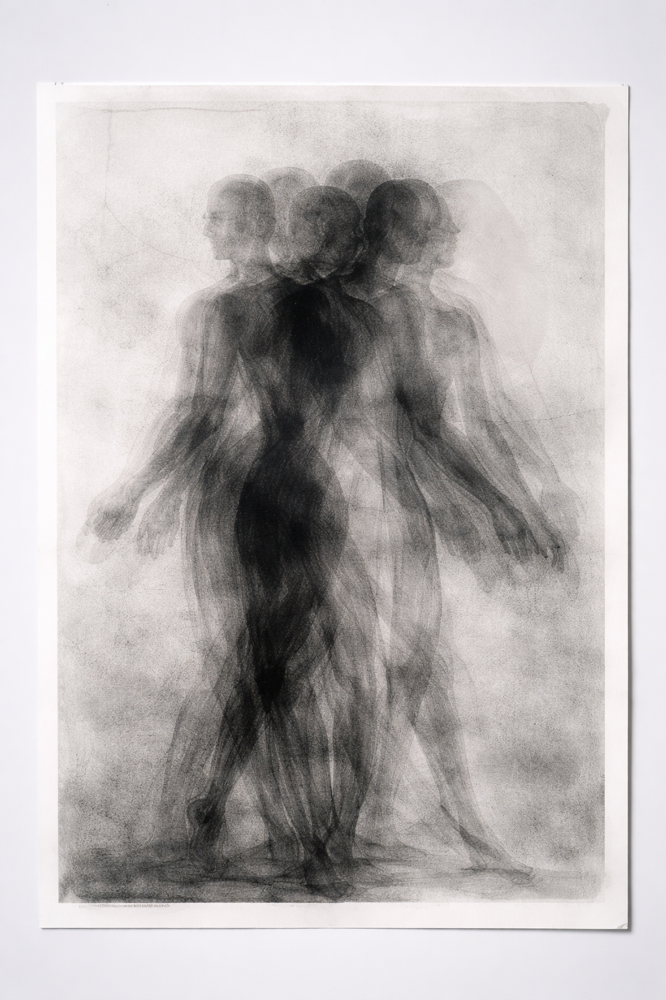
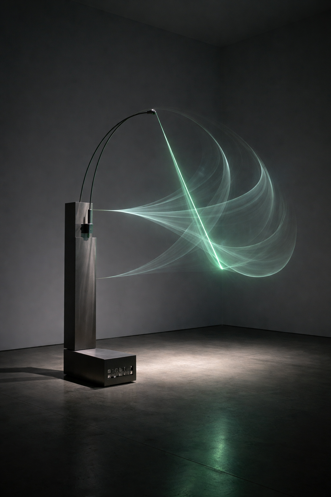
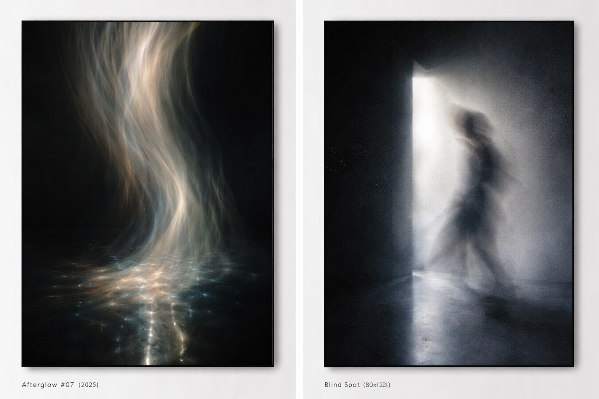
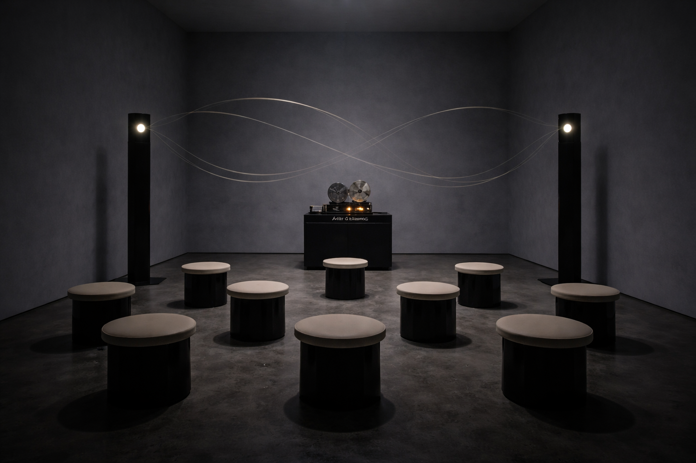
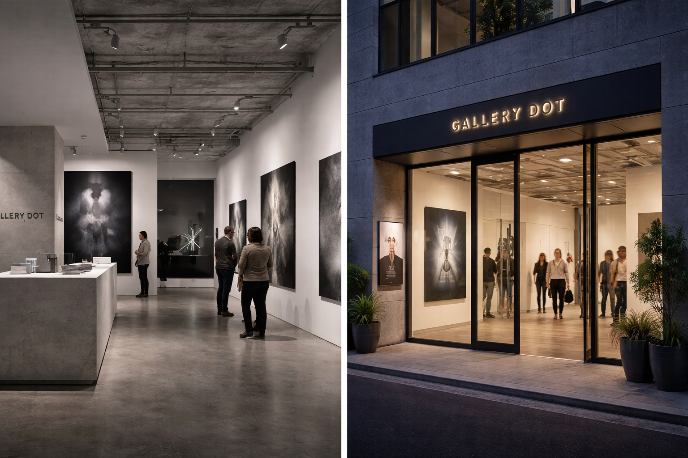
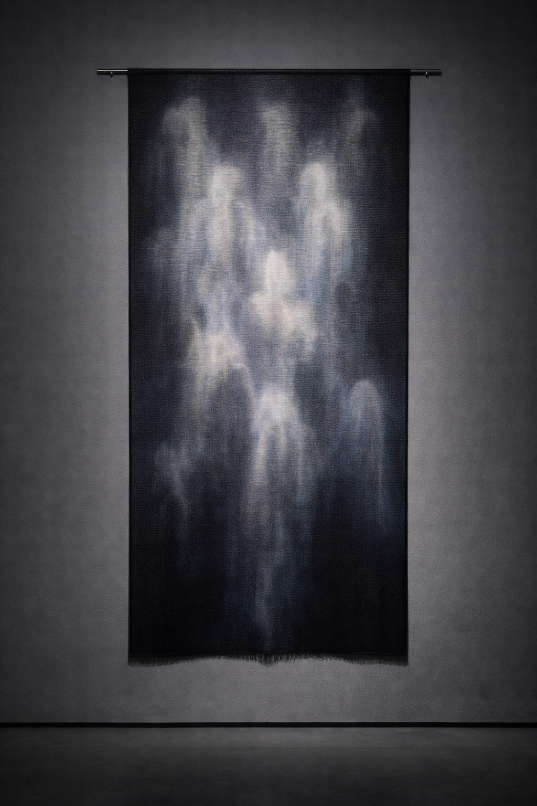
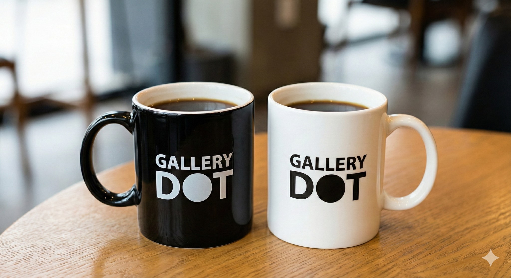

ARTIST 01 / OPTICAL PRINT
折原 柚衣 Yui Orihara
《Afterglow #07》, 2025 ほか
微光下での長秒露光による、視覚の遅延と残像表現。
10年の残像。




光が去ったあとに、残るもの。
記憶と物質が交わる、10周年の特別展。
新作・未公開作を中心とした5名のアーティスト展／予約者優先
光が去ったあとに浮かぶ像のように、創作の時差を見つめる展覧会。10年で出会った作家たちの新作・未公開作を中心に、記憶と物質が交わる瞬間を展示します。

見ることと、記憶すること。そのあいだに生まれる余韻を、作品とともにたどります。
写真、彫刻、テキスタイル、版画、音。異なる表現が交差する10周年の展示。
微光下での長秒露光による、視覚の遅延と残像表現。
周期的に揺れるアームが、残像の軌跡を空間に描く。

生成された残像パターンを、実際の織物へと戻す。
モノタイプ＋グラファイト。
サウンド・インスタレーション。
LPから事前予約し、当日チェックインされた方に、10周年記念マグカップをプレゼント。

来場前に気になることを、ここで確認できます。
当日入場も可能ですが、事前予約の方を優先してご案内します。混雑時はお待ちいただく場合があります。
LPから事前予約し、当日チェックインされた予約者ご本人に、各日先着40個でお渡しします。同伴者は対象外で、なくなり次第終了です。
作品前での静止画撮影は可能ですが、フラッシュは使用できません。映像作品は撮影できません。
前日18:00まで変更・キャンセルが可能です。予約番号を添えて info@gallery-dot.jp までご連絡ください。
日時指定の予約者を優先してご案内します。混雑時は入場までお待ちいただく場合があります。混雑しないことを保証するものではありません。
30分単位で来場時間帯を選択します。変更・キャンセルは前日18:00まで。
トークイベントやライブパフォーマンスも予定しています。日時は資料間で不一致があるため、確認後に掲載します。
2016GALLERY DOT 開廊
2017若手作家支援プログラム開始
2020オンライン・ビューイング開設
2022アーティスト・イン・レジデンス開始
202610周年記念展「AFTER IMAGE」